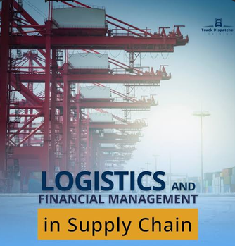

Welcome to our integrated business solutions company specializing in Finance, Logistics, and Information Technology. We are dedicated to empowering organizations with operational excellence and sustainable growth through innovative solutions, strategic consulting, and strong client partnerships. Explore our services and discover how we can transform your business.
Discover our curated collection of products and services tailored to meet your unique business needs. Get started today and experience excellence in every transaction. Our comprehensive portfolio combines innovative technology solutions with proven financial strategies, designed specifically for modern businesses seeking growth and sustainability. Whether you are looking for consulting services, digital transformation solutions, or financial advisory backed by IT expertise, we have the perfect offerings for you. With years of professional experience in Finance Accountancy integrated with cutting-edge Information Technology, we understand the complexities of today's business landscape. Our team is committed to delivering high-quality solutions that drive measurable results and create lasting value for our clients. We pride ourselves on offering personalized service, transparent communication, and results-driven strategies. Each product and service is carefully selected and optimized to ensure you receive the best possible return on investment. Join hundreds of satisfied clients who have transformed their businesses through our innovative solutions. Start your journey toward success with us today.
Established as a leader in integrated business solutions, we specialize in the convergence of Financial Services, Supply Chain Management, and Digital Transformation. Our mission is to deliver exceptional value by combining financial expertise, logistical excellence, and technological innovation.
We offer a diverse range of services such as follows;
Through the application of advanced analytics and cloud-based platforms, we enhance financial reporting accuracy, streamline logistics operations, and implement robust IT infrastructure. Our professional team brings extensive experience in strategic financial planning, warehouse and transportation management, and systems integration.
We recognize that modern enterprises need synchronized capabilities across financial, operational, and technological domains to remain competitive. Our integrated approach ensures seamless coordination between departments, minimizing costs and maximizing productivity. Whether serving small enterprises or large corporations, we develop tailored solutions that address unique challenges while driving profitability and scalability.
Our dedication to excellence, innovation, and client partnerships has established us as a preferred solutions provider in the marketplace. We prioritize transparency, accountability, and measurable outcomes in every engagement with our clients.
Our comprehensive service portfolio encompasses financial accounting and auditing, accounts receivable management, tax compliance, and strategic financial consulting.
In logistics, we provide inventory management, warehouse optimization, supply chain visibility, and transportation coordination.
Our IT solutions include enterprise resource planning systems, business intelligence platforms, cybersecurity infrastructure, cloud migration services, and custom software development.

Each service is designed to integrate seamlessly across your organization, ensuring efficiency and profitability. We deliver tailored implementations backed by industry expertise and proven methodologies. Whether you need standalone services or fully integrated solutions, our experienced team ensures measurable results and exceptional value for your business operations.